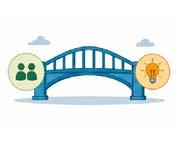
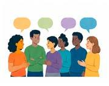
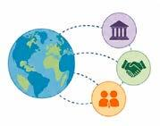
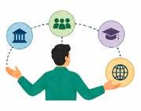

Módulo 3 | Aula 1
Atores sociais: importância da democratização do conhecimento
Atores sociais
Atores sociais são pessoas, grupos, instituições ou organizações que participam direta ou indiretamente de um processo de tomada de decisão em políticas públicas. Essa participação pode acontecer em diferentes momentos do ciclo político, a saber: na fase de elaboração da agenda, apontando demandas de interesses para serem abordados e na formulação de políticas, por meio das quais busca-se identificar a viabilidade das estratégias políticas. Nessa fase, experiências prévias, mesmo que em outros contextos, podem colaborar e aumentar as chances de sucesso, sendo indispensável a escuta dos diferentes atores envolvidos. A implementação, assim como as etapas de avaliação e monitoramento, constituem o momento em que a política de fato acontece.
Quando os diferentes atores não são escutados no processo político, corre-se o risco de existir baixa aceitabilidade e de aumentarem as barreiras de implementação. A ausência da participação plural dos atores pode gerar desigualdades, resistências de grupos específicos, incompatibilidade social e cultural, entre outros. Por isso, identificar e incluir diferentes atores sociais não é apenas uma estratégia democrática, mas sim uma oportunidade para produzir políticas mais efetivas e aceitáveis.
Na prática, observa-se que alguns grupos e pessoas ocupam posições estratégicas no processo de tomada de decisão, o que de certa forma influencia e tensiona o conhecimento gerado. Podemos organizar esses atores em alguns grupos principais. No entanto, é importante destacar os atores híbridos, ou seja, aqueles que transitam nessas diferentes arenas.
Tabela – Atores sociais e suas descrições.
| Atores | Descrição |
|---|---|
Gestores e tomadores de decisão | São autoridades, dirigentes e servidores públicos das esferas municipais, estaduais ou federais que ocupam funções de gestão e participam da formulação, implementação e monitoramento das políticas públicas, contribuindo para transformar diretrizes e decisões em ações concretas nos serviços e territórios (Wü et al., 2014). |
Burocratas | Profissionais que atuam dentro do aparato estatal, responsáveis por implementar políticas públicas e executar rotinas administrativas (Lipsky, 2019). |
Pesquisadores | São atores vinculados a universidades, centros de pesquisa, instituições científicas ou redes de produção de conhecimento. |
 Think tanks | São instituições que articulam o conhecimento acadêmico e científico nas etapas das políticas públicas (estabelecem pontes) (Fundação Getúlio Vargas, 2014). |
 Sociedade civil | São atores sociais independentes do governo que apresentam demandas, interesses, necessidades e valores da população. Pode incluir movimentos sociais, associações comunitárias, sindicatos, organizações não governamentais, entidades profissionais, grupos de usuários, coletivos, conselhos e cidadãos organizados. |
 Organismos internacionais | São atores externos ao país que podem influenciar nas etapas das políticas públicas. Incluem agências internacionais, bancos de desenvolvimento, organizações de cooperação técnica, fundações, organizações não governamentais internacionais e governos estrangeiros. |
 Híbridos | São atores que transitam nas diferentes arenas e combinam trajetórias, ocupando diferentes sistemas de conhecimento, níveis de governança e contextos de decisão (D’Albuquerque et al., 2026). |
Fonte: ChatGPT (2026).
Democratização do conhecimento
Segundo o glossário do governo brasileiro, democracia é “uma forma de governar onde a população tem o poder de participar das decisões, elegendo seus representantes, participando dos conselhos sociais, caracterizando um governo do povo” (Brasil, 2020). Do mesmo modo, democratizar o conhecimento também pode ser entendido como uma forma de ampliar o acesso, a produção, a participação e a circulação da informação em diferentes espaços comunitários.
Mais do que “divulgar”, democratizar subentende uma troca ativa de saberes, reconhecendo a importância da coprodução do conhecimento. Esse modelo é fundamental, pois considera e valoriza as experiências vividas e sentidas por diferentes atores sociais.
Nesse contexto, algumas estratégias vêm colaborando fortemente para a democratização do conhecimento. A Ciência Aberta ou Open Science busca tornar o conhecimento científico mais acessível a diferentes públicos, circulando de forma inclusiva, equitativa e sustentável (Unesco, 2021).
É necessário também superar a ideia de que universidades e pesquisadores são os únicos detentores do conhecimento. Para isso, vem sendo estimulada a coprodução do conhecimento, quando diferentes atores podem juntos produzir perguntas, métodos e análises para diferentes problemas sociais. Em uma publicação da revista The Lancet, a Pesquisa Participativa Baseada na Comunidade (PPBC) é apresentada como uma ferramenta relacionada à justiça social, pois reconhece a comunidade como uma parceira ativa na produção do conhecimento (Opara, 2025).
Em um mundo globalizado, onde a internet amplia consideravelmente as possibilidades de acesso à informação por meio de materiais científicos, cursos, aulas, repositórios institucionais, podcasts e mídias sociais, a democratização se torna possível. No entanto, também nos deparamos com barreiras como a infodemia, fake news, desigualdade de acesso digital, entre outros. Sendo assim, é necessário criar mecanismos para minimizar os efeitos negativos e ampliar a interpretação crítica das informações fornecidas.
A Tradução do Conhecimento, já abordada em outros módulos, também vem se mostrando uma estratégia promissora para aproximar o conhecimento científico a diferentes públicos-alvo e colaborar com a disseminação do conhecimento gerado.
Acesse o comentário completo da Revista The Lancet sobre a Pesquisa Participativa Baseada na Comunidade (PPBC): https://doi.org/10.1016/j.lana.2025.101239.